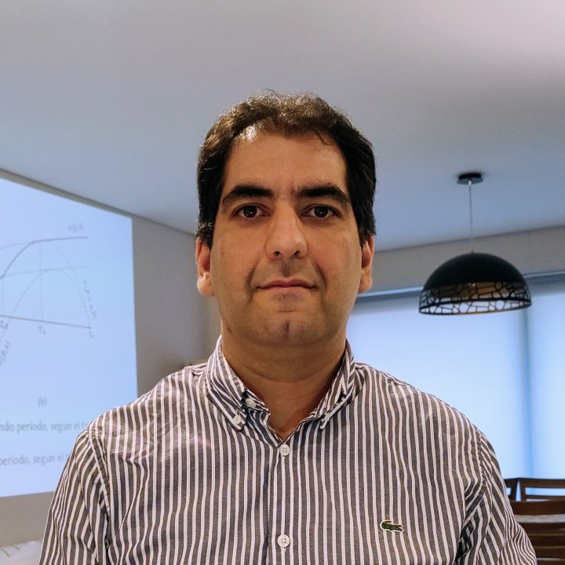

Licenciado en Economía egresado en la Universidad Nacional de Río Cuarto. Magíster en Economía egresado en la Universidad de San Andrés.
Me desempeño como docente e investigador en la Universidad Nacional de Río Cuarto y la Universidad Siglo 21.
Además soy consultor independiente, especialmente en el campo de la Econometría y la Ciencia de Datos, el Desarrollo Económico, Organización Industrial y Economía en general.
Mi principal hobby son el dibujo y el arte digital.
Ver currículum completo aquí.
Ver perfil de GitHub
Ver canal de YouTube
Ver perfil de LinkedIn
2010 - 2019. Maestría in Economía. Buenos Aires: Universidad de San Andrés.
Tesis: Competencia a la Bertrand con Costos de Sustitución y Efectos de Red.
2003 - 2008. Licenciatura en Economía. Río Cuarto: Universidad Nacional de Río Cuarto.
Tesis: Rol de los mercados de capitales en los procesos de desarrollo económicos.
2011 - presente. Consultor Independiente.
2008 - presente. Profesor de Econometría y Ciencia de Datos_. Universidad Nacional de Río Cuarto.
2015 - 2023. Docente de Estadística y Probabilidad, Inferencia Estadística y Econometría. Universidad Nacional de Villa María.
2016 - presente. Profesor de Estadística II e Investigación Operativa. Universidad Siglo 21.
D’Ercole, Favio (2019). Competencia a la Bertrand con Costos de Sustitución y Efectos de Red. Anales de la Asociación Argentina de Economía Política (LIV). ver PDF
D’Ercole, Favio y Natali, Pamela (2012). Análisis exploratorio de la dinámica laboral en Argentina (2003-2011). Anales de la Asociación Argentina de Economía Política (XXLVII). ver PDF
D’Ercole, F., Guerrero, E., y Sandoval, V. (2011). Emergencia y atomización de centros mercantiles. Proyecto de El Autómata Económico. ver PDF
D’Ercole, Favio (2008). Rol de los Mercados de Capitales en los procesos de Desarrollo Económico. Anales de la Asociación Argentina de Economía Política (XXLIII). ver PDF
Nominado en la categoría de Ciencia y Técnica como “Ciudadano Destacado 2008”. Río Cuarto: Telediario, Canal 13.
D’Ercole, Favio (2008). Evidencia empírica sobre la relación Finanzas - Crecimiento. Asociación Argentina de Docentes de Matemática de Facultades de Ciencias Económicas y Afines. Distinción: Primer Premio Ing. Ricardo Carbajo.